NISTeHandbook
NISTeHandBook.RmdIntroduction to package
The NISTeHandbook R package seeks to implement methods from the NIST/SEMATECH e-Handbook of Statistical Methods.
As of the current version only 4 methods have been implemented:
4-plot
4-plot and 6-plot are very similar EDA methods for testing assumptions on a given data.
Let us start with the 4 -plot, using the example from the eNist website. We use the LEW dataset, which describes a study of the physical behaviour of steel-concrete beams under periodic load. The response variable is deflection from a center point, and 200 observations were collected.
We first load the RPackage:
The package provides the data set directly.
head(LEW.DAT)
#> Deflection
#> 1 -213
#> 2 -564
#> 3 -35
#> 4 -15
#> 5 141
#> 6 115To use the 4-plot function we simply provide the observations to the function:
fourplots <- fourPlot(LEW.DAT$Deflection)
fourplots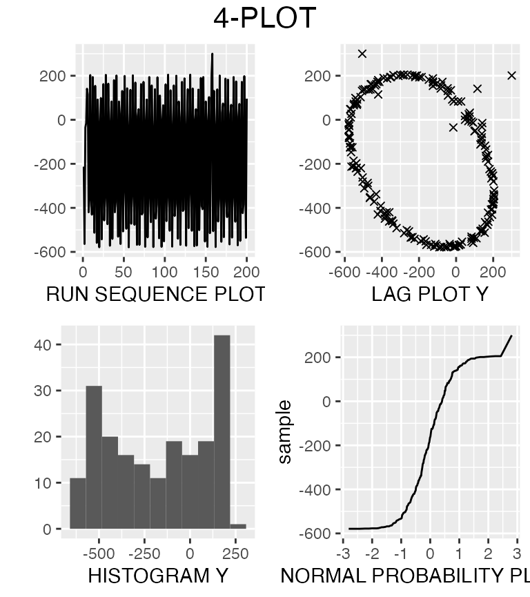
The function outputs a 4-plot object that contains every plot as a ggplot object, such that you can modify each individual plot. Printing the 4-plot object gives the plot shown above. The number of bins is set to a default of 11, but we can specify other bin sizes in the 4-plot function.
fourplots <- fourPlot(LEW.DAT$Deflection, bins = 20)Using individual plots:
To use only a specific or modify plots we can access them in the 4-plot object. Let us take the sequence plot.
fourplots$seq_plot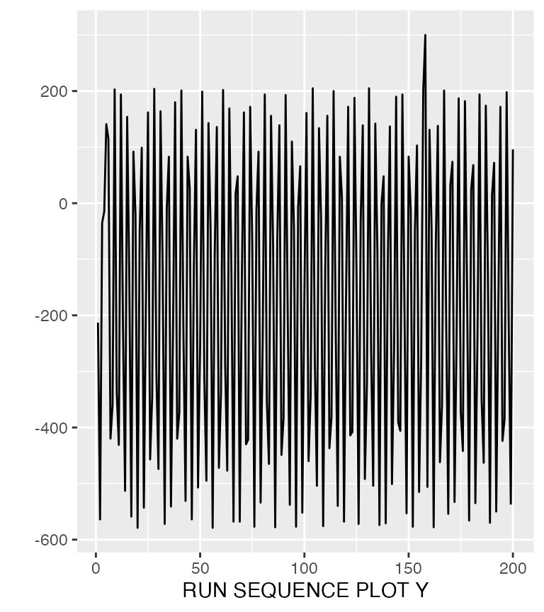
If we wish to modify any of the plots we can use ggplot2:
fourplots$seq_plot + geom_line(color="red")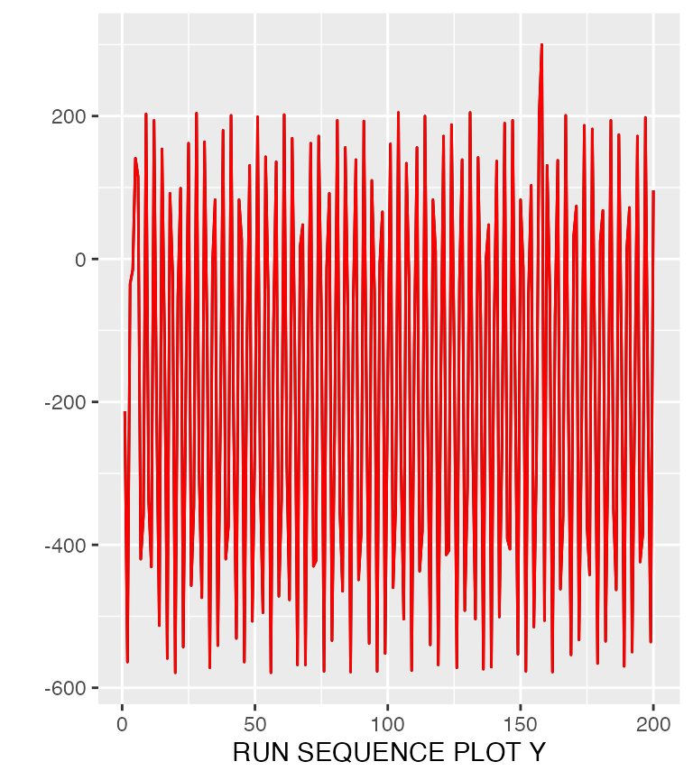
For finding out the specific geoms of fourplot, see the documentation in ?fourplots.
We can then modify and save these to change our 4-plot.
fourplots$seq_plot <- fourplots$seq_plot + geom_line(color="red")
fourplots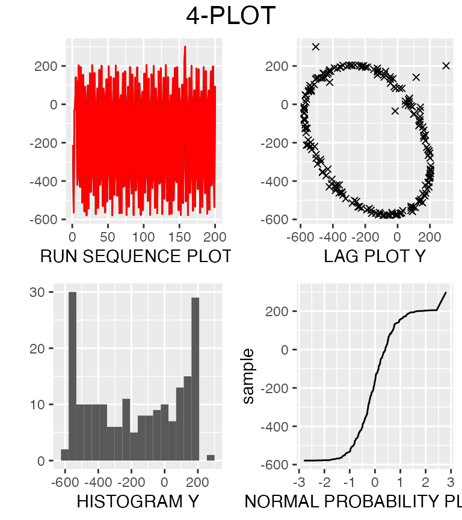
For assumptions and conclusions of the plots you should consult the handbook.
6-plot
The 6-plot behaves in a very similar way to the 4-plot. The function attempts to do a linear Y versus X fit. Let us again load data from the handbook website, in another fashion:
PONTIUS <- read.table("https://www.itl.nist.gov/div898/handbook/datasets/PONTIUS.DAT", skip=25)
head(PONTIUS)
#> V1 V2
#> 1 0.11019 150000
#> 2 0.21956 300000
#> 3 0.32949 450000
#> 4 0.43899 600000
#> 5 0.54803 750000
#> 6 0.65694 900000We are looking at a response variable, beam deflections (V1) at various different loads (V2). To create the 6-plot we input the response and the explanatory variable.
sixPlot(PONTIUS$V2, PONTIUS$V1)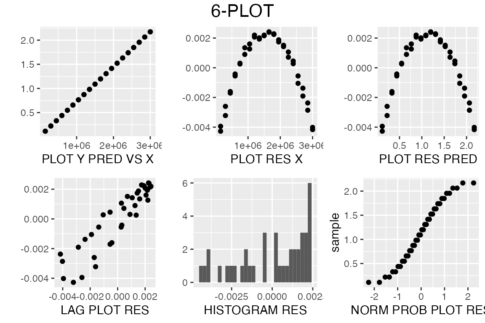
sixPlot returns a sixPlot object that contains the 6 ggplots, that can be manipulated in a similar manner to the 4-plot.
Tietjen-Moore Test for outliers
Imagine having approximately normal distributed data, and you want to check for outliers. Then the Tietjen-Moore test is suited for you. You can use the TMTest to test for exactly \(k\) outliers, no more, no less.
Let us again take data from the handbook (Which Tietjen and Moore also used in the original paper):
x = c(-1.40, -0.44, -0.30, -0.24, -0.22, -0.13, -0.05, 0.06, 0.10, 0.18, 0.20, 0.39, 0.48, 0.63, 1.01)The x-values are observations of vertical semi-diameters of the planet Venus…
After doing some EDA, we suspect there might be two outliers.
tmTest(x,2)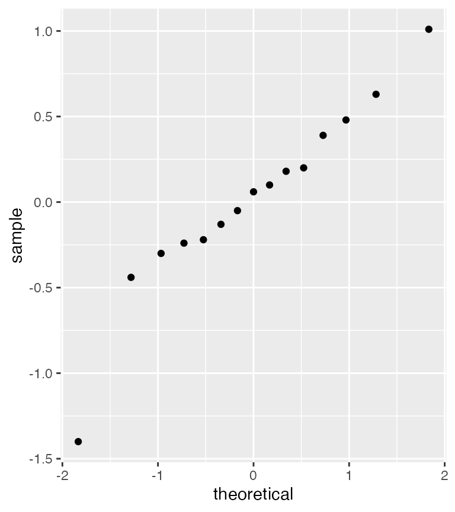
#>
#> Results of Tietjen Moore Test
#> --------------------------
#> H_0: there are no outliers in the data
#> H_a: the 2 most extreme points are outliers
#>
#> Test statistic: E_k = 0.2919994
#> Significance level: a = 0.05
#> Critical value for lower tail: 0.3404478
#> Critical region: Reject H_0 if E_k < 0.3404478The TMTest function shows a normal QQ plot, to remind us that the test is only valid on approximately normal distributed data. We also see the two suspected outliers.
The print shows us that we can conclude that the suspected outliers are indeed outliers.
Tukey-Lambda PPCC Plot
If your teacher has told you to find an appropriate distribution for your data, you might have come across the PPCC page in the Engineering Statistics handbook. It mentions that you can use a Tukey-Lambda PPCC plot for symmetric distributions.
A PPCC plot is a graphical technique for identifying a good value for a shape parameter in a distribution. The Tukey-Lambda distribution has shape parameter \(\lambda\) and is used to indicate several common distributions.
- \(\lambda=-1\) : distribution is approximately Cauchy
- \(\lambda=0\) : distribution is exactly logistic
- \(\lambda=0.14\) : distribution is approximately normal
- \(\lambda=0.5\) : distribution is U-shaped
- \(\lambda=1:\) distribution is exactly uniform
If we have no idea of which distribution to fit our data, we can then use a Tukey-Lambda PPCC plot. Let us generate some normal data:
We now imagine that we do not know how that data was generated.
We can then use PPCC_tukey
fourPlot(data)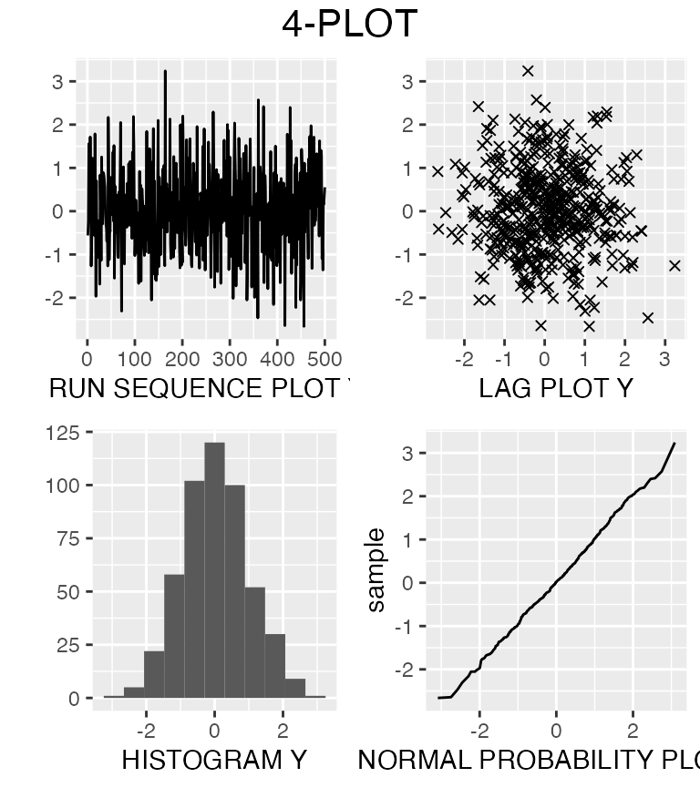
We observe that the distribution is symmetric, and the normal probability plot suggests that is it normal. But is it really normal?
Let us ask the Tukey:
tukeyPPCC(data)
#> Maximum value of the correlation coefficient = 0.999
#> Lambda = 0.14
#> The distribution of your data might be aprroximately normal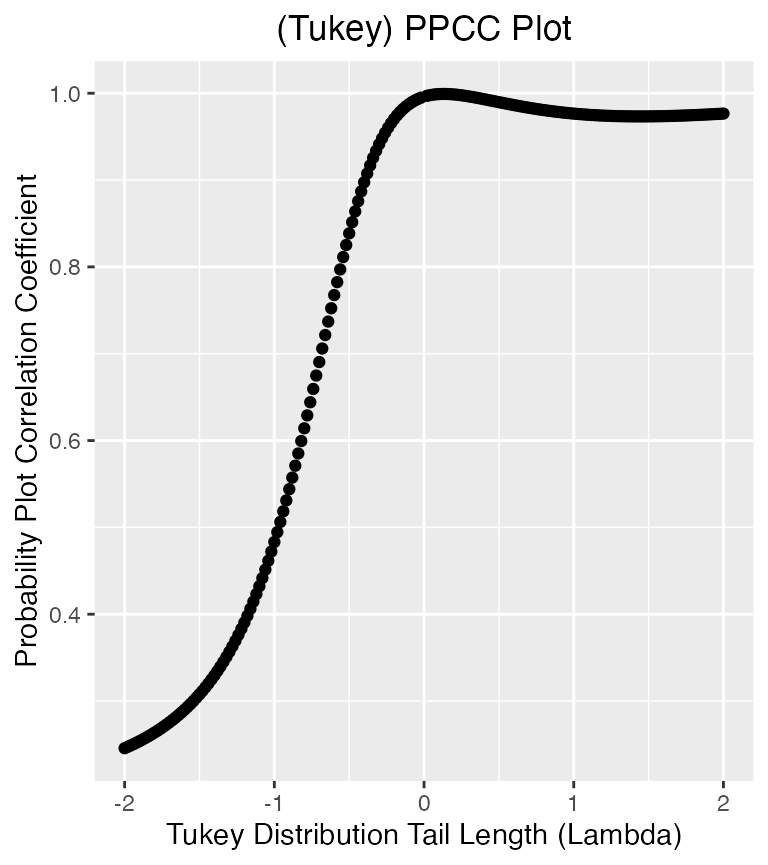
We get a Tukey-Lambda PPCC plot, showing the correlation coefficient for different values of \(\lambda\). The print shows that the highest correlation is 0.999 and that was at \(\lambda = 0.14\). It also conveniently tell us that our data is indeed normal.
PPCC Weibull or Gamma
After completing a Tukey-lambda PPCC plot, we can follow up with another PPCC plot to check the best-fit.
Let me show you an example. Let’s load some weibull data, and forget that it is weibull.
weib_data = RANDWEIB.DAT
head(weib_data)
#> data
#> 1 0.8052801
#> 2 0.7403102
#> 3 1.0452200
#> 4 0.7830150
#> 5 1.2402800
#> 6 1.0057760Let us do some EDA, with the 4plot.
fourPlot(weib_data$data)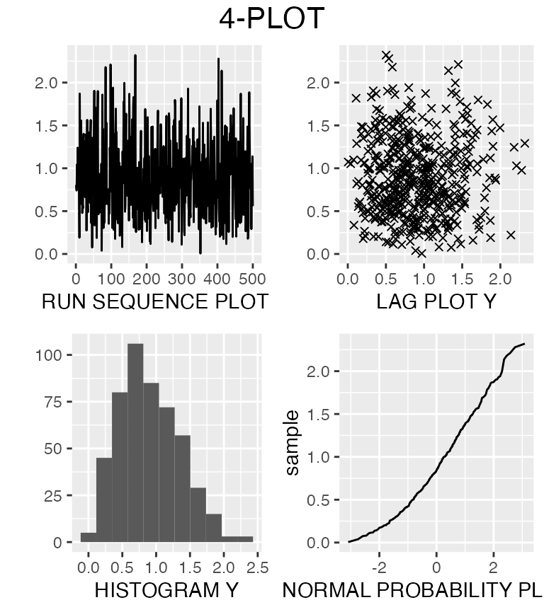
We see that it is fairly symmetrical from the histogram, and that it might be approximate normal distributed. Let us try and confirm with the tukeyPPCC.
tukeyPPCC(weib_data$data)
#> Maximum value of the correlation coefficient = 0.992
#> Lambda = 0.24
#> The distribution of your data might be short-tailed (U-shaped), for example beta or uniform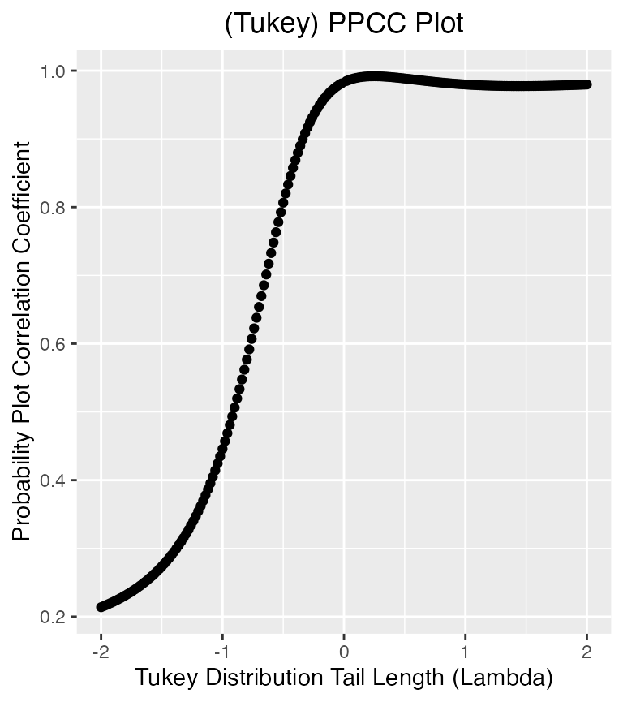
Interesting. The output tells us that data might come from a uniform or beta or something short-tailed.
With the PPCC function you can fit the data to either a gamma or weibull distribution.
PPCC(weib_data$data, 'gamma')
#> Maximum value of the correlation coefficient = 0.998
#> Optimal value of the shape parameter = 10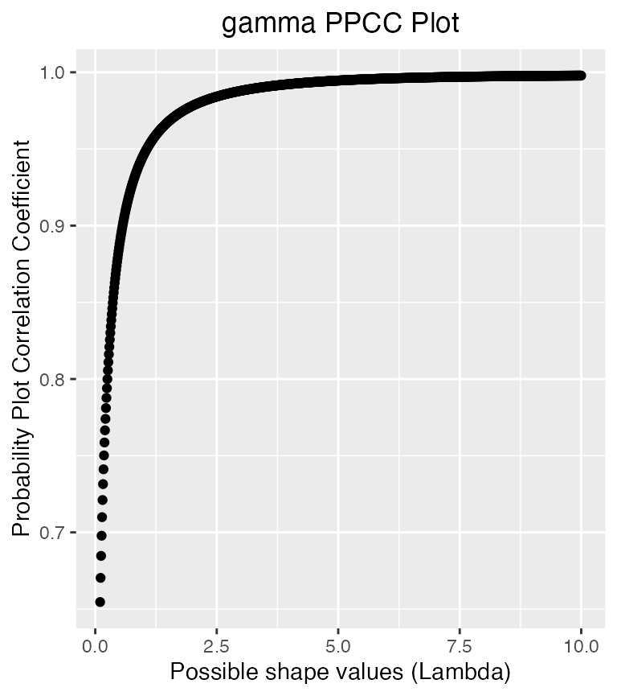
The data could fit a gamma with shape parameter 10, best. Or..
PPCC(weib_data$data, 'weibull')
#> Maximum value of the correlation coefficient = 0.999
#> Optimal value of the shape parameter = 2.23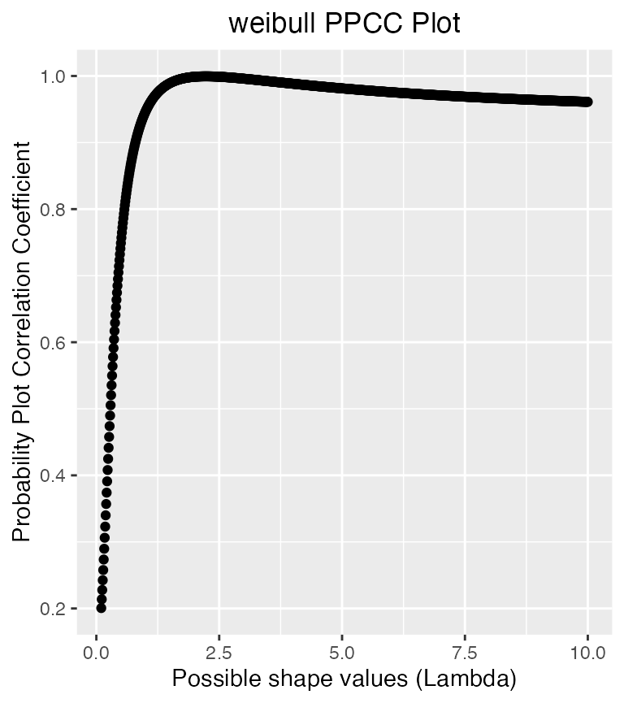
It has a correlation coefficient of .999 with a weibull with shape parameter 2.23. The data is in fact generated from a weibull with shape parameter 2.